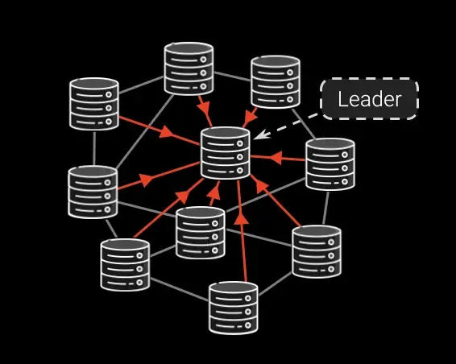

솔라나 리더(Leader)란?
솔라나 네트워크에서 리더는 특정 시간 구간(슬롯) 동안 블록을
생성하고 네트워크에 전파하도록 지정된 검증자(Validator)입니다.
이더리움·비트코인과 달리 솔라나는 미리 계산된 리더 스케줄을 사용해
끊김 없는 블록 생산을 보장하며, 하나의 리더가 약 1.6초(4 슬롯) 동안 연속으로
블록을 생성합니다.

리더의 핵심 업무 4단계
- 트랜잭션 수집
리더 슬롯이 시작되면, 클라이언트와 다른 노드들이 전송한 트랜잭션을
Gulf Stream 메커니즘으로 앞당겨 전달받아 메모리 큐에 정렬합니다.
- PoH(Proof-of-History) 진행
리더는 약 400 ms마다 ‘틱(Tick)’ 해시를 생성해 시간 순서를 증명하며,
일부 틱에 트랜잭션 배치를 삽입합니다.
- 병렬 실행 & 상태 업데이트
런타임의 Bank 모듈에서 계정 락을 활용해 병렬로 트랜잭션을 실행,
수수료 징수·계정 상태 변경·루트 해시 계산을 마칩니다.
- 블록(→ 슈레드) 생성 & 전파
실행 결과를 포함한 블록을 128 KB 단위 슈레드(Shred)로 분할하고,
Turbine 트리 네트워크를 통해 O(log N) Hop으로 전체 노드에 배포합니다.
TLDR
리더는 트랜잭션 수집 → PoH → 병렬 실행 → 슈레드 전파를 초단위로
반복해, 솔라나가 수천 TPS를 유지하도록 만드는 네트워크의 “심장”입니다.
위의 내용을 보면 알 수 있듯이 밸리데이터들은 선정된 리더에게 트랜잭션을 보내고, 리더는 받은 트랜잭션을 바탕으로 블록을 생성하게 됩니다.
또한 블록을 생성하면서 동시에 POH 해시를 돌려 솔라나의 트랜잭션 순서까지 결정하는 것을 알 수 있습니다. 결국 리더는 만들어진 블록과, POH 데이터를 Shread로 쪼개어 다른 노드들에게 전파를 하게 되는데 Turbine을 통해 전파를 하게됩니다.
어떻게 리더가 선출되나?
• 매 에포크(약 2–3일)마다 네트워크 스냅샷을 기준으로
지분 증명(PoS) 가중 라운드로빈 방식으로 리더 순서표가 계산됩니다.
• 모든 노드는 “슬롯 → 리더” 매핑을 미리 알고 있어, 자신의 리더 슬롯이 오기
전에 하드웨어·네트워크 준비를 완료할 수 있습니다.
사전 예측의 장점:
트랜잭션은 “미래 리더”에게 바로 전달되므로, 줄 서기 지연이 크게 줄어들고
처리량(TPS)이 높아집니다.
추가로 알아두면 좋은 점
- 보상: 리더가 수집한 수수료 (MEV) + 인플레이션 보상을 받습니다.
- 실패 시: 슬롯 내에 블록을 못 만들면 해당 슬롯은 ‘스킵’,
반복되면 페널티(잠재적 슬래싱) 위험이 있습니다.
- 경제성: 리더 역할을 제대로 수행하지 못하면 보상을 잃게
되므로, 검증자들은 정직하게 행동할 경제적 유인이 있습니다.
* MEV에 대한 내용은 다른 섹션에서 다루겠습니다.